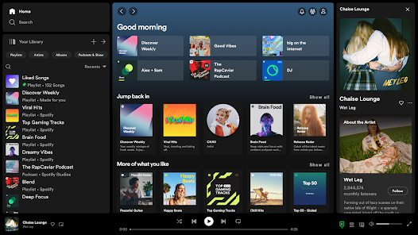
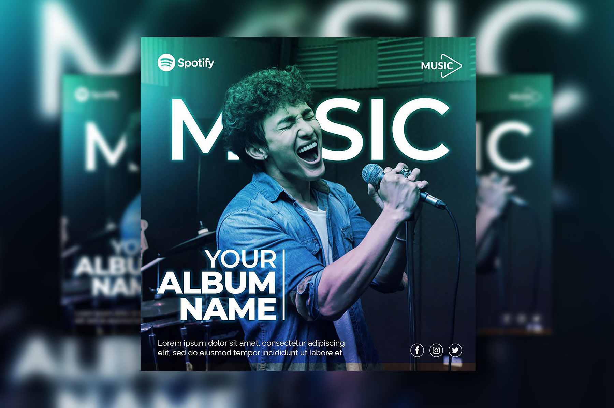

Spotify is the world's most popular audio streaming subscription service with 777 million users.
It is a digital music, podcast, and video service that provides access to millions of songs and other content from creators worldwide.

Spotify offers more than just music. Users can listen to different types of audio depending on their interests.
Spotify Free: Users can listen to music without paying, but they will hear advertisements and have some limits on how they listen.
Spotify Premium: Premium subscribers can listen without advertisements, download music for offline listening and have more control over what they play.

One of Spotify's biggest features is personalization. The platform recommends music based on a user's listening habits and helps people discover artists and songs they may not have found otherwise.
